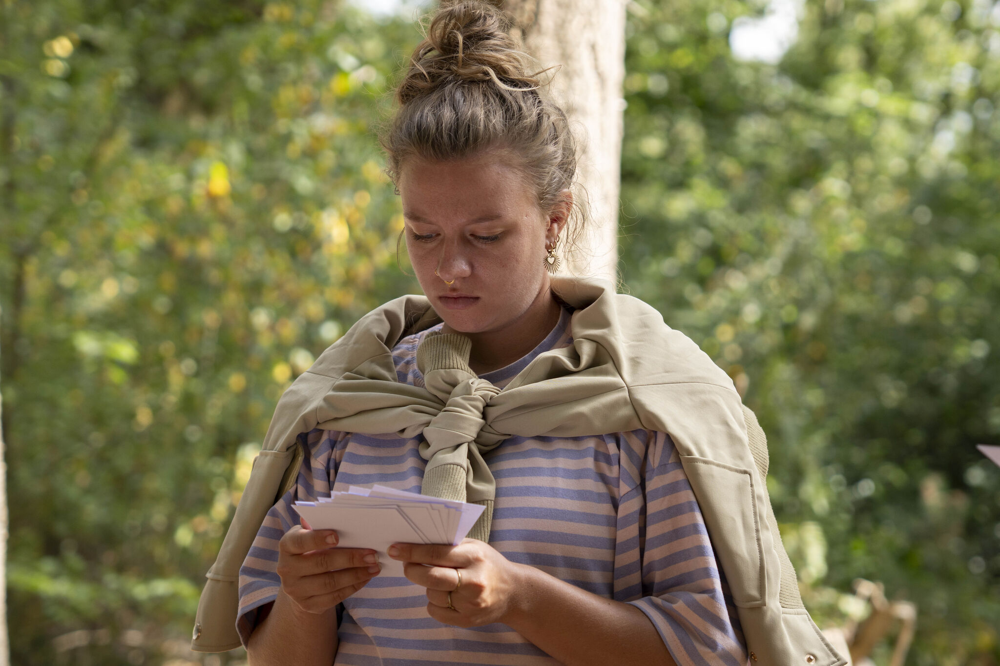
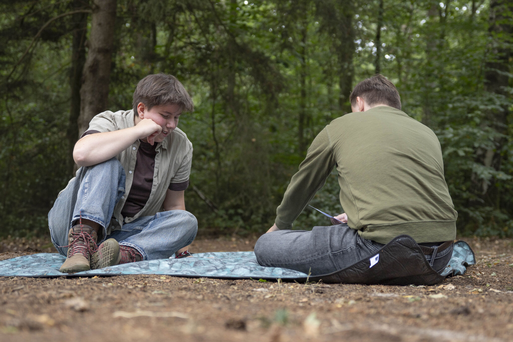
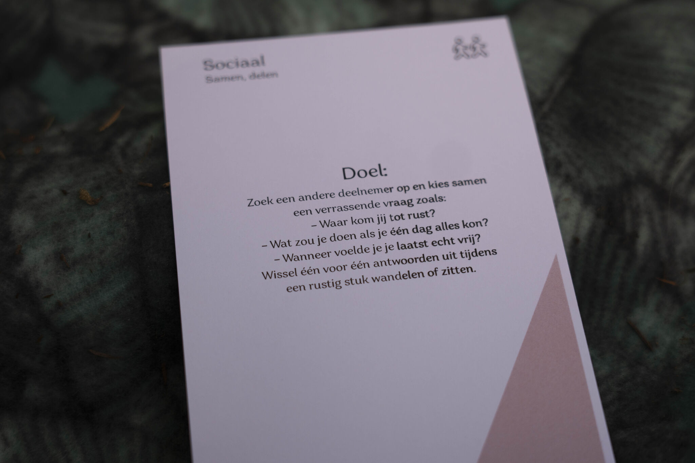
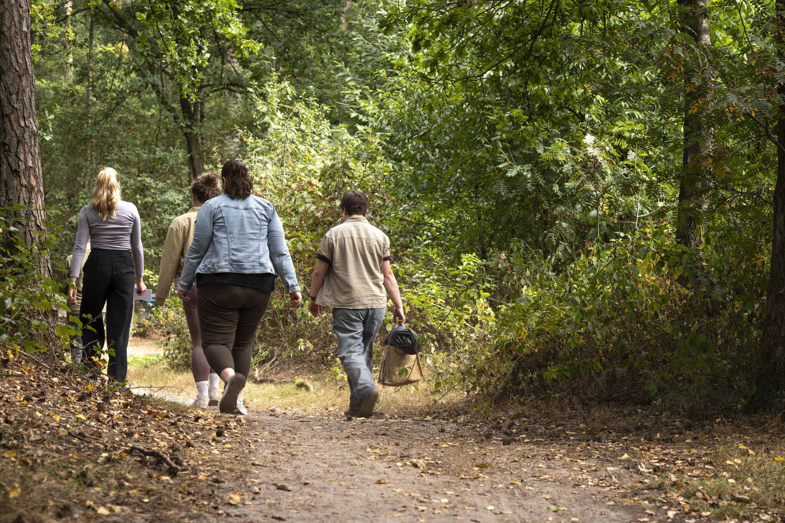

Misschien niet … dus laten we dat veranderen. Want de ‘GO’s’ verdienen het om aandacht te krijgen. Waarom? Omdat deze platforms van studenten hun schouders zetten onder verduurzaming. Zowel in Leeuwarden als in Velp.
Ze zijn al actief, en worden nóg actiever. Dat is eerder deze maand beklonken. Met de handtekeningen van drie GO-vertegenwoordigers (Anna Dalheimer, Robin van Luit en Wouter van Bronkhorst) en het College van Bestuur (Anneke Luijten-Lub en Jan van Iersel).
De studenten zijn heel blij dat de samenwerking tussen de Green Offices en de hogeschool zo beter wordt. “We gaan advies geven, meedenken in werkgroepen en duurzame initiatieven verder aanjagen. Ook bijvoorbeeld voor de introductieweek, waar we in Velp de plastic wegwerpbeker verruilen voor een 100% herbruikbaar en afbreekbaar alternatief. Het helpt om medestudenten, medewerkers en de school steeds meer te betrekken bij duurzaamheid.”
Nieuwsgierig naar de Green Offices en naar onze andere duurzame inspanningen?




The numbers